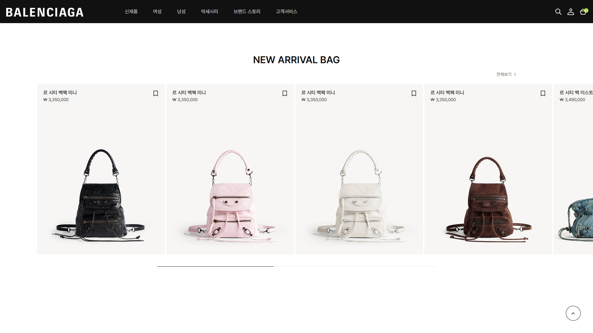
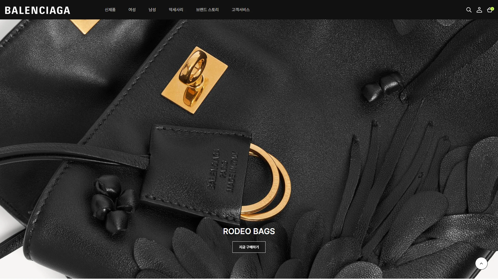
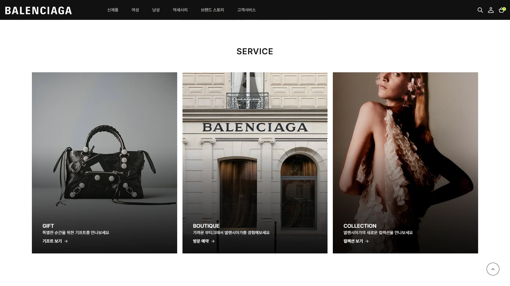
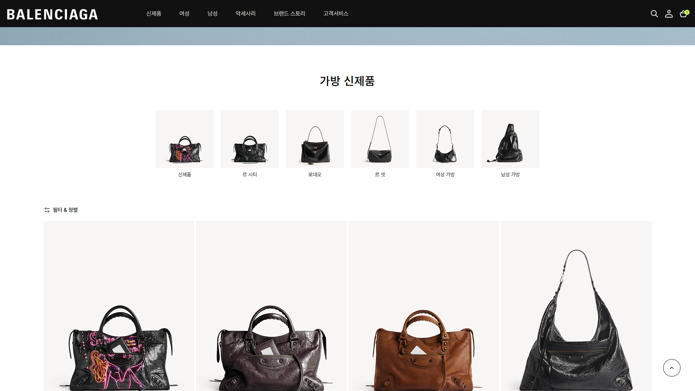
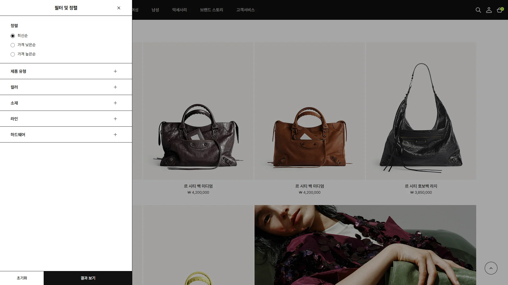
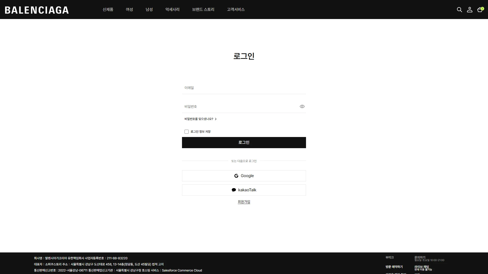
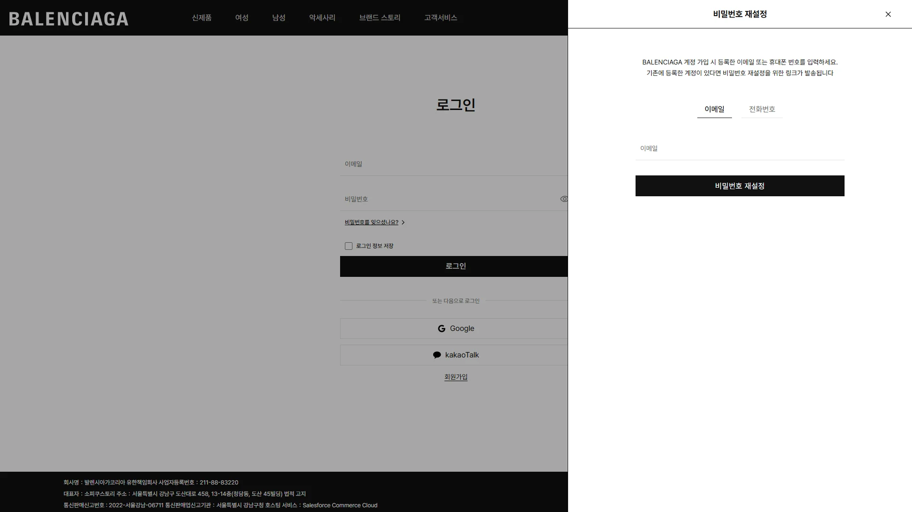
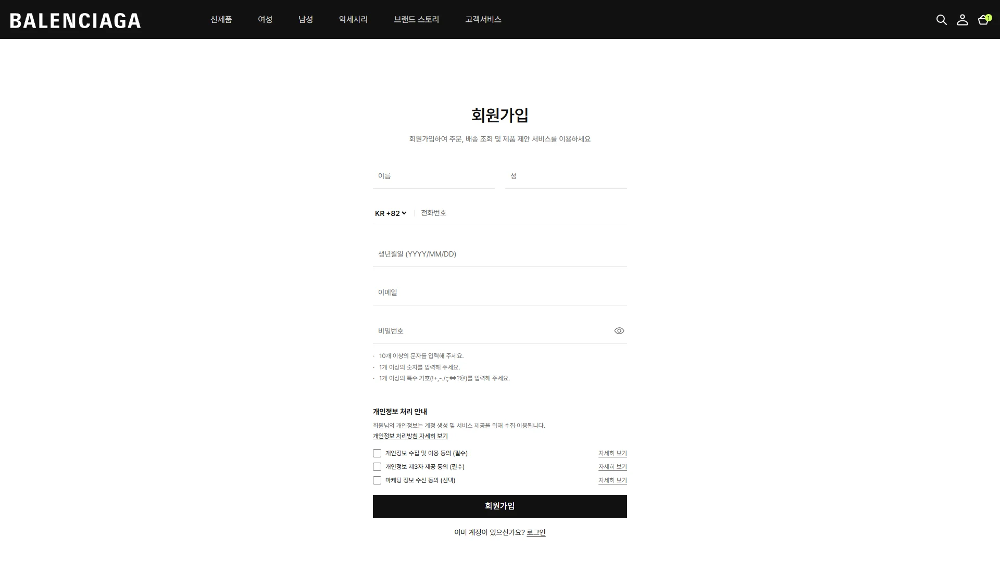

04 / TEAM PROJECT · WEBSITE RENEWAL · 2026
BALENCIAGA
브랜드 비주얼과 상품 탐색을 연결한 웹사이트 리뉴얼 팀 프로젝트.
프로젝트 기간 · 2026.01 – 2026.02 (임시)
사이트 보기참여 방식
팀 공동 디자인·개발
메인 참여 영역
New Arrival Bag · Rodeo · Service
서브 참여 영역
가방 신제품 · 로그인
비밀번호 찾기 · 회원가입
프로젝트 개요
발렌시아가의 브랜드 비주얼을 중심으로 상품을 탐색하고 계정 화면으로 이동하는 웹사이트를 구성했습니다.
디자인 방향
상품과 캠페인 이미지를 크게 보여주고, 상품명·가격·버튼은 구분해 배치했습니다. 콘텐츠의 성격에 맞춰 카드와 비주얼의 비중을 조절했습니다.
핵심 인터랙션
상품 호버와 가로 슬라이더, 필터 패널의 선택 상태를 구현했습니다. 로그인에서 비밀번호 찾기와 회원가입으로 이어지는 흐름을 연결했습니다.
메인 페이지

가방 신제품 소개
상품명과 가격을 카드 상단에 모아 가방 이미지를 넓게 보여줍니다. 옆으로 넘기며 상품을 비교하고, 호버하면 이미지가 바뀝니다.
Rodeo 캠페인


서비스 안내
세로 이미지와 하단 텍스트·버튼의 위치를 통일했습니다. 이미지 아래쪽에 어두운 그라디언트를 더해 흰색 설명과 링크가 배경에서 구분되도록 구성했습니다.
서브페이지
가방 신제품
상품 카드의 간격과 정보 위치를 맞추고, 필터와 정렬은 별도 패널에 모았습니다. 상품 목록을 배경에 남겨 탐색 맥락을 유지하며, 패널 열기·닫기와 항목 펼치기, 선택 상태를 구현했습니다.


로그인 화면
로그인과 회원가입은 중앙 폼, 얇은 입력선과 검은 주요 버튼으로 구성했습니다. 비밀번호 찾기는 로그인 위에 오른쪽 패널로 열립니다.
로그인 → 비밀번호 찾기 패널 · 로그인 → 회원가입


회원가입

포트폴리오를 위한 비공식 리뉴얼 프로젝트입니다. BALENCIAGA 상표와 브랜드 이미지의 권리는 해당 권리자에게 있습니다.